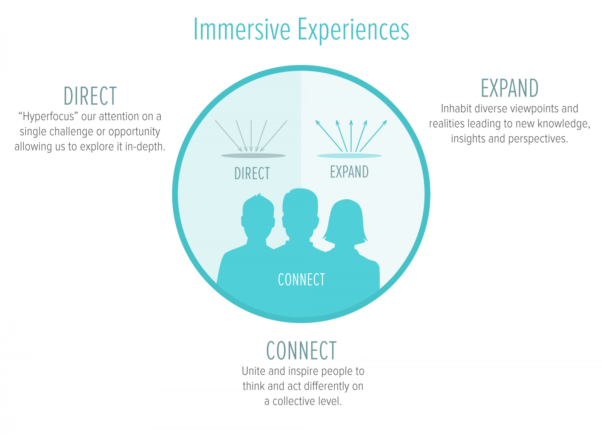
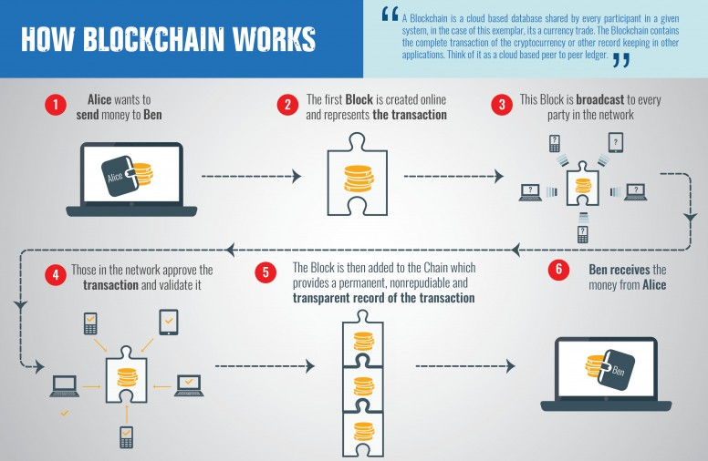

About us
We aim to offer specialised Consulting Services on a variety of topics, our areas of expertise include Block Chain, Autonomous Things and Immersive Experience
Our business offers a variety of Consulting Services, our carefully selected talent boasts experience across a number of leading global tech stacks and industries, ensuring we deliver a wide range of software requirements with ease and speed.
We adopt streamlined processes which yield highly efficient and dynamic development operations throughout the software development lifecycle.
We provide easily adaptable, self-managing teams, giving you the opportunity to focus on your business objectives while we build seamless software that aligns with your unique business requirements.
We develop, maintain and evaluate blockchain and cryptocurrency related products and web services and provide long-term assistance and advice on related technological and operational matters for our partners worldwide. You'll find the full spectrum of blockchain technology in one company, as our teams operate in multiple disciplines. This includes low level kernel optimization in hardware near mining operation and data centre build outs. We also actively develop financial trading frameworks and web services operating on top of the blockchain, whilst creating beautiful and intuitive UI/UX.
We also offer an array of consulting services related to Autonomous Things and Immersive Experiences


Block Chain
Blockchain technology allows for fast, secure, and transparent peer-to-peer transfer of digital goods that include money and intellectual property. In cryptocoin mining and investing, it's an important topic to understand.
One of the most talked about and misunderstood topics in recent times, blockchain technology is completely overhauling the way digital transactions are conducted and could eventually change the way several industries conduct their daily business.
The underlying technology that facilitates bitcoin transactions and eliminates the need for an intermediary is the blockchain.
One of blockchain's main benefits lies in its transparency, as the ledger functions as a living, breathing chronicle of all peer-to-peer transactions that occur.
Each time a transaction takes place, such as when one party sends bitcoin directly to another, the details of that deal — including its source, destination, and timestamp — are added to a block.
The block contains the transaction along with other similar types of transactions that have occurred recently. In the case of bitcoin transactions, the recent transactions are for the previous 10 minutes or so. Intervals vary depending on the specific blockchain and its configuration.
The validity of the transactions within the cryptographically protected block is then checked and confirmed by the collective computing power of miners within the network in question.
When the transactions within a block are deemed valid, they are attached to the most recently verified block in the chain, creating a sequential ledger which is viewable by anyone.his process continues in perpetuity, expanding on the blockchain's contents and providing a public record that can be trusted. In addition to being constantly updated, the chain and all of its blocks are distributed across the network to a large number of machines.
This ensures that the latest version of this decentralized ledger exists virtually everywhere, making it almost impossible to forge.
Blockchain's capabilities:
Blockchain prevents the dishonest practice of Double-Spending which is essentially the ability to transfer the same cryptocurrency to more than one person.
Blockchain distributes a public record of all transactions and confirms a block before each of its individual transactions can be finalized, the possibility of this fraudulent activity is essentially wiped out.
In the past, intermediaries such as banks and payment processors validated these transactions to make sure that everything was on the up and up. Blockchain technology lets a user to transfer digital assets from point A to point B, taking comfort in the fact that reliable checks and balances are in place.
The ability for anyone to view a public blockchain such as the one associated with virtual currencies is a key factor in why the technology works as well as it does. The easiest way to peruse this distributed database is through a block explorer, typically hosted on a free-to-use website such as Blockchain.info.
Most blockchain explorers are heavily indexed and easily searchable, allowing you to locate transactions in a number of different ways including by IP address, block hash, or other relevant data points.
Future Potential of Blockchain:
Blockchain has come to the forefront of many discussions because of its role in the distribution of cryptocurrencies like bitcoin. In the long run, these digital cash transactions may end up being a small part of blockchain technology's overall footprint on the world as a whole and the way assets are transferred online.
The possibilities for blockchain implementation seem endless, as its underlying technology can be leveraged in many fields to perform a number of important tasks.
These include:
- Executing contracts
- Safely buying and selling intellectual property
- Distributing important medical information
- Ensuring that voting in elections is incorruptible
World society has just begun to scratch the surface of blockchain applications. New potential uses for blockchain are being discovered on a regular basis.
Private blockchains will allow companies to revolutionize their own internal processes, while public, open-source variations will continue to change the way people handle business in their daily lives.


Autonomous Things
Autonomous things,or the Internet of autonomous things, is an emerging term for the technological developments that are expected to bring computers into the physical environment as autonomous entities without human direction, freely moving and interacting with humans and other objects.
Self-navigating drones were the first Autonomous technology in (limited) deployment. It is expected that the first mass-deployment of autonomous technologies will be the autonomous car, generally expected to be available around 2020.
Other currently expected autonomous technologies include home robotics (e.g., machines that provide care for the elderly, sick or young), and military robots (air, land or sea autonomous machines with information-collection or target-attack capabilities).
Autonomous technologies share many common traits, which justify the common notation. They are all based on recent breakthroughs in the domains of (deep) machine learning and artificial intelligence. They all require extensive and prompt regulatory developments to specify the requirements from them and to license and manage their deployment. They all require unprecedented levels of safety (e.g., automobile safety) and security, to overcome concerns about the potential negative impact of the new technology.
As an example, the autonomous car both addresses the main existing safety issues and creates new issues. It is expected to be much safer than existing vehicles, by eliminating the single most dangerous element – the driver. The US's National Highway Traffic Safety Administration estimates 94 percent of US accidents were the result of human error and poor decision-making, including speeding and impaired driving, and the Center for Internet and Society at Stanford Law School claims that "Some ninety percent of motor vehicle crashes are caused at least in part by human error". So while safety standards like the ISO 26262 specify the required safety, there is still a burden on the industry to demonstrate acceptable safety.
While car accidents claim every year 35,000 lives in the US, and 1.25 million worldwide, some believe that even "a car that's 10 times as safe, which means 3,500 people die on the roads each year [in the US alone]" would not be accepted by the public. The acceptable level may be closer to the current figures on aviation accidents and incidents, with under a thousand worldwide deaths in most years – three orders of magnitude lower than cars. This underscores the unprecedented nature of the safety requirements that will need to be met for cars, with similar levels of safety expected for other Autonomous Things.
Examples of the capabilities for Autonomous Technology:
- Space
- Infrastructure
- Transportation
- Automation
- Home Automation
- Architecture
Space - A space probe that is able to deal with the surface of a planet to collect samples. For example, if the ground is too hard for digging, the probe will decide to move an area that looks softer.
Infrastructure - A dam that can autonomously respond to conditions to maintain water levels in reservoirs and prevent flooding.
Transportation - A small cart that is able to navigate sidewalks, people and traffic to make a last mile package delivery to a customer.
Automation - An artificial intelligence that resembles a conveyor belt that can automatically find reusable and recyclable materials in garbage.
Home Automation - A vacuum cleaner that can navigate irregular spaces, people and pets to clean a floor.
Architecture - Windows that autonomously adapt to light levels to achieve goals such as heating, cooling, growing plants or achieving indoor light parameters set by users.
Immersive Experience
Immersion into virtual reality is a perception of being physically present in a non-physical world. The perception is created by surrounding the user of the VR system in images, sound or other stimuli that provide an engrossing total environment.
The degree to which the virtual or artistic environment faithfully reproduces reality determines the degree of suspension of disbelief. The greater the suspension of disbelief, the greater the degree of presence achieved.
Types of Immersion:
Tactical immersion - Tactical immersion is experienced when performing tactile operations that involve skill. Players feel "in the zone" while perfecting actions that result in success.
Strategic immersion - Strategic immersion is more cerebral, and is associated with mental challenge. Chess players experience strategic immersion when choosing a correct solution among a broad array of possibilities.
Narrative immersion - Narrative immersion occurs when players become invested in a story, and is similar to what is experienced while reading a book or watching a movie.
Virtual Reality:
Immersive virtual reality: is a hypothetical future technology that exists today as virtual reality art projects, for the most part. It consists of immersion in an artificial environment where the user feels just as immersed as they usually feel in consensus reality.
The most considered method would be to induce the sensations that made up the virtual reality in the nervous system directly. In conventional biology we interact with consensus reality through the nervous system.
Examples & applications - The range of uses of immersion include computer games from simple arcade to massively multiplayer online game and training programs such as flight and driving simulators. Entertainment environments such as motion simulators that immerse the players in a virtual digital environment enhanced by motion, visual and aural cues. Reality simulators, such as one of the Virunga Mountains in Rwanda that takes you on a trip through the jungle to meet a tribe of mountain gorillas. Or training versions such as one which simulates taking a ride through human arteries and the heart to witness the buildup of plaque and thus learn about cholesterol and health.
New fields of studies linked to the immersive virtual reality emerges every day. Researchers see a great potential in virtual reality tests serving as complementary interview methods in psychiatric care. Immersive virtual reality have in studies also been used as an educational tool in which the visualisation of psychotic states have been used to get increased understanding of patients with similar symptoms. New treatment methods are available for schizophrenia and other newly developed research areas where immersive virtual reality is expected to achieve melioration is in education of surgical procedures, rehabilitation program from injuries and surgeries and reduction of phantom limb pain.
Virtual and Augmented Reality applications have been designed for finite element analysis of shell structures. Using stylus and data gloves as input devices, the user can create, modify mesh, and specify boundary conditions. For a simple geometry, real-time color-coded results are obtained by changing loads on the model. Studies have used Artificial Neural Networks (ANN) or approximation methods to achieve real-time interaction for the complex geometry, and to simulate its impact via haptic gloves. Large scale structures and bridge simulation have also been achieved in immersive virtual environments. The user can move the loads acting on the bridge, and finite element analysis results are updated immediately using an approximate module.
Home
CV
Consulting Services
eBusiness